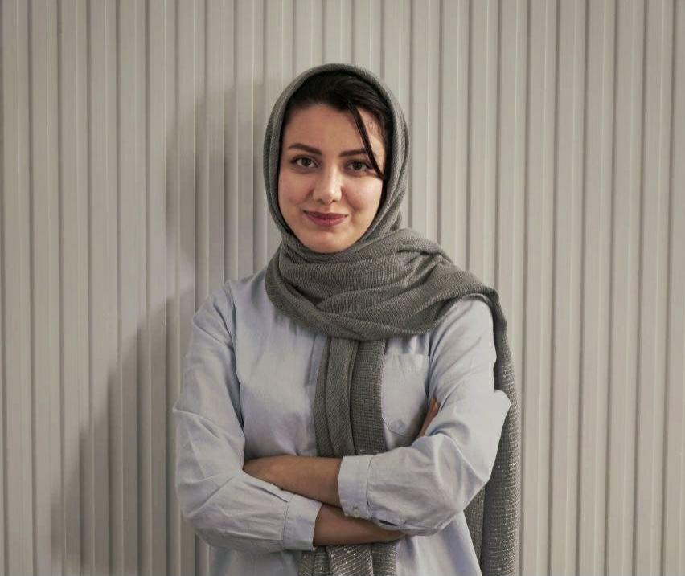

IT Specialist | Frontend Developer Path
09336275931
zahrajamshidii79@gmail.com
IT specialist with a focused path in Front-End Development, actively progressing through structured self-directed learning. A responsible and fast learner with strong communication skills and a genuine passion for continuous improvement and practical application of knowledge. Highly motivated to gain hands-on experience and begin a professional career as a Junior Front-End Developer within a dynamic and collaborative environment.
BSc Computer Engineering – Payame Noor University Tehran North
English – Upper-Intermediate